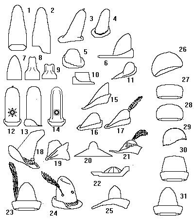

Felt Hats

- Sugarloaf Hat.
Began as a Burgundian fashion (c1450), but quickly spread to neighboring countries.
- Sugarloaf Hat.
French fashion.
- (c1380)
- Burgundian (c1450)
- ...
- An Italian Hunting Cap (early 14th Century)
- Burgundian (c1450)
- (c1480)
As the Sugarloaf fashion went on, variations developed that stressed the patterns of wear
that could occur (similar to the development of "finger grip" indentations on
American Western Hats and Fedoras).
- (c1480)
A more extreme example.
- ...
- A Peasant's hat (c1340-)
This hat is shown in illustrations as being worn both with the bill forward, and with the
bill falling back over the back of the neck).
- Sugarloaf Hat (15th Century)
French fashion.
- Sugarloaf Hat (15th Century)
French fashion.
- Sugarloaf Hat (c1480)
- The Classic "Robin Hood" felt hat.
This is obviously a variation on the old Roman Pilaeus hat, but I'm unconvinced that this
style, reminiscent of later Peasant, Woodsman, and Hunting styles appeared as early as the
12th Century where the more modern Robin Hood stories are set.
- Felt hat
- Felt hat
- ...
- Germanic (c1490)
- Woodsman's Hat (c1340)
A true descendant of the Roman Pilaeus, this felt hat fashion is more often seen in its
summer straw knockoffs.
- Italian Hunter's Hat (14th Century).
- (c.1320)
- a Short Sugarloaf hat (14th Century)
- French (15th Century)
- Italian Hat (c1420).
Green Wool.
- Felt cap (1470)
- 15th Century
- Venetian Cap, red felt (c1510)
- French (13th century)
- Italian (c1470), often worn with a coif
- (c.1382-84)
Some Headwear of the Middle Ages - Felt Hats, by I. Marc Carlson. Copyright 1996.